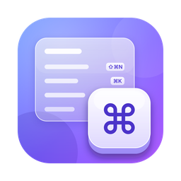

Nhấn ⌘ hai lần rồi giữ là hiện bảng toàn bộ phím tắt của app đang mở, từ Safari tới Final Cut Pro, Photoshop. Tìm nhanh, bấm một dòng là chạy lệnh, app không có tiếng Việt thì dịch luôn tên lệnh. Mình làm app này vì dựng video cả ngày mà nhiều phím vẫn phải đi tìm trong menu.
macOS 14 trở lên · Mac chip Apple và Intel · Miễn phí, mã nguồn mởĐang xem trên điện thoại? RinKeys là app cho Mac, các bạn mở trang này trên Mac để tải nha.
Nhấn ⌘ hai lần rồi giữ là hiện hết phím tắt của app đang dùng. Gõ để tìm, bấm Dịch để xem tên tiếng Việt, bấm Lưu ảnh để chia sẻ bảng phím tắt.
Tải file .dmg ở nút phía trên, mở ra rồi kéo icon RinKeys vào thư mục Applications.
RinKeys chưa được Apple công chứng nên lần đầu mở macOS sẽ chặn. Đây là bình thường với app miễn phí ngoài App Store, chỉ làm một lần:
Các bước giống hệt RinDock, các bạn xem ảnh chụp từng bước ở trang RinDock.
RinKeys cần quyền điều khiển máy để đọc thanh menu của app đang dùng và bấm lệnh giúp bạn. Cửa sổ chào mừng của RinKeys có nút Mở cài đặt Trợ năng mở thẳng tới đây, bạn chỉ cần bật công tắc cạnh RinKeys:
Bật xong cửa sổ chào mừng tự đổi sang "Đã có quyền". Các bản cập nhật sau RinKeys tự cài, không phải bật lại.
Trong app cũng có sẵn phần này: chuột phải vào icon ⌘ trên thanh menu → Mẹo dùng.
RinKeys đọc phím tắt trên thanh menu của app. App nào để phần lớn phím trong bảng cài đặt riêng hoặc tự vẽ menu (một số game, app viết bằng công cụ riêng) thì RinKeys chỉ thấy vài lệnh. Final Cut Pro, Photoshop và CapCut có thêm nhóm phím để bù phần đó: của Final Cut Pro và Photoshop là phím mặc định của hãng, của CapCut là bộ "Phím tắt 3" trong bảng Phím tắt. Nếu bạn dùng bộ khác hoặc đã tự đổi phím, nhóm này có thể khác phím của bạn.
Gặp lỗi thì chuột phải vào icon ⌘ trên thanh menu → Báo lỗi…, app điền sẵn thông tin máy và nhật ký để mình sửa nhanh hơn.
Thấy app có ích thì các bạn ủng hộ mình một ly cà phê để mình có thêm động lực làm tiếp. Không ủng hộ vẫn dùng đầy đủ, không khoá tính năng nào.